CESTA Lunch Seminar Series, Stanford University, November 19, 2026
Histories, Methods, Frictions
1
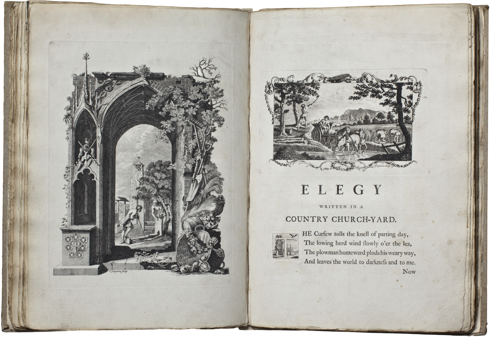
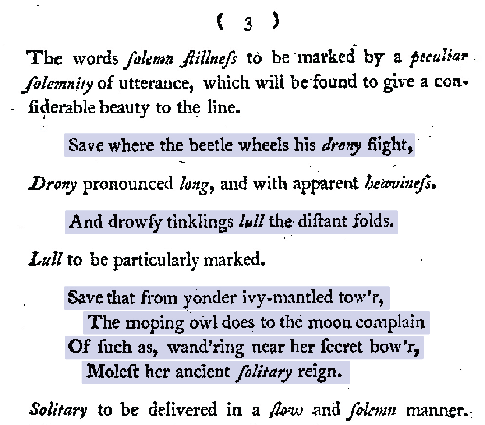
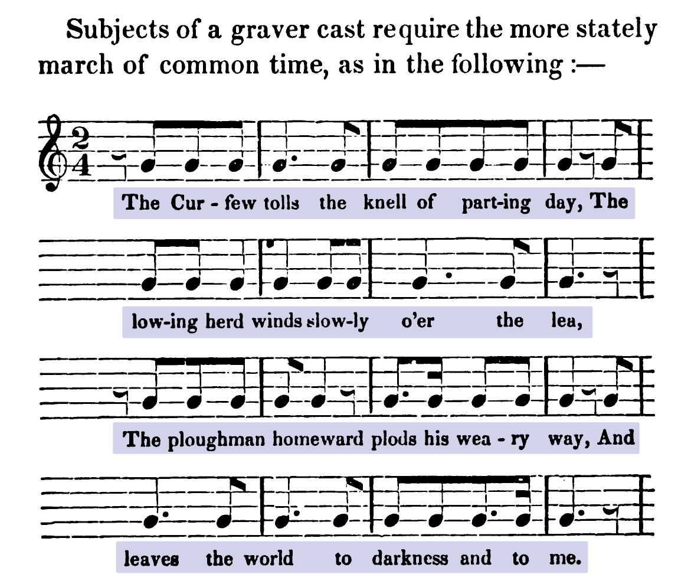
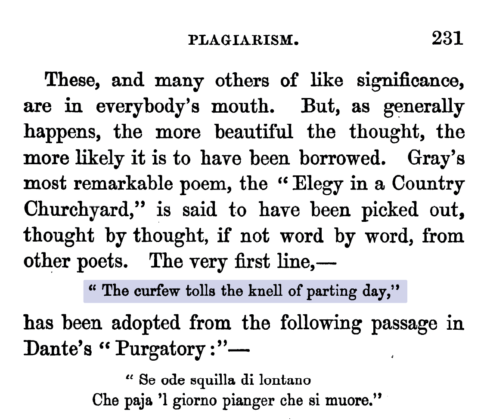
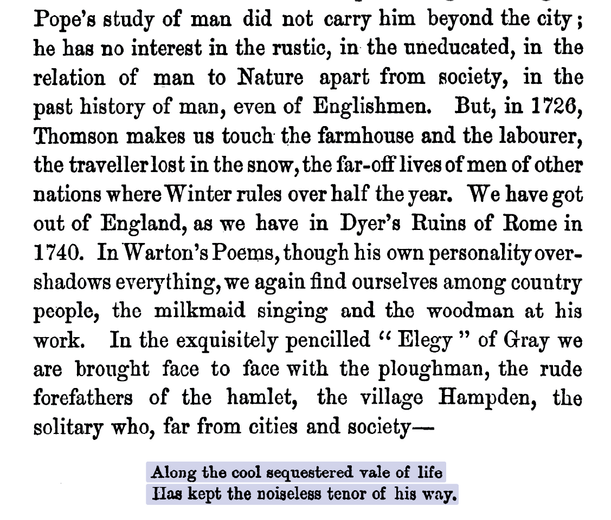
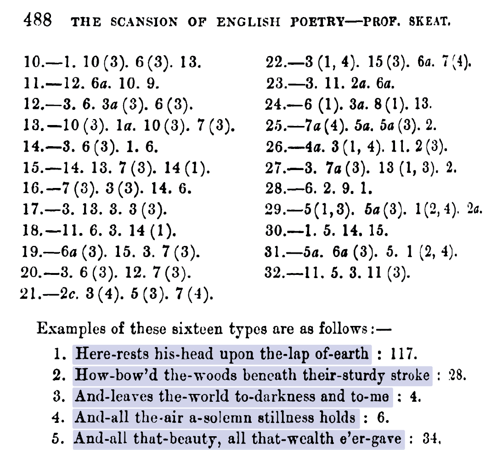
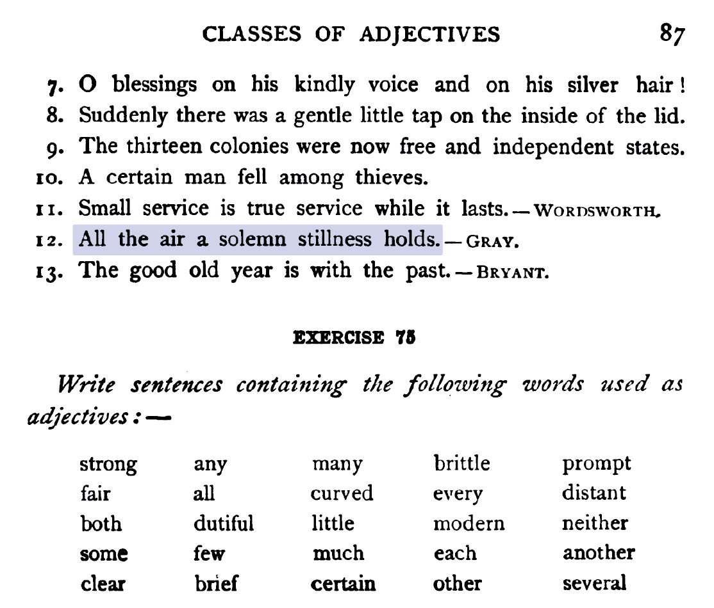
None of these six books prints the whole poem. Most take a stanza or a single line.
“le jeu du découpage et du collage” Compagnon, 1979
2
Pages per year
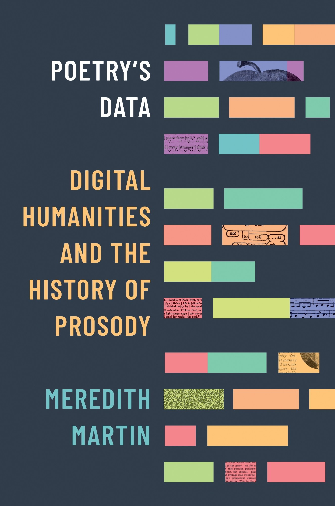
3
The PPA is not an anthology of “great” literature. Its books and articles teach readers how to scan, pronounce and hear verse.
Poets as instruments. Manuals name a poet to explain a rule, show a metre or set up a comparison. The same few names come back in book after book.
Their lines. Manuals quote a single line or stanza to show how verse works. Later manuals copy the same line and leave the rest of the poem behind.
3.1
Canon Dynamics in the Princeton Prosody Archive, 1559–1929
Wouter Haverals, Petr Plecháč & Artjoms Šeļa. Journal of Cultural Analytics, forthcoming 2026.
A poet’s name is not a very stable search term.
So we try to link each mention to a person in Wikidata.
Surface forms
Neural linking
Knowledge base
Countable signal
Entity linking decides which Shelley a page means, Mary or Percy Bysshe.
The final poet universe has 3,164 poets and 737,194 mentions in 3,149 works, 1559–1929.
The 25 most frequent occupation labels among the 92,823 humans linked in the PPA.
“…what I finally know about morality and the obligations of men, I owe to sport. It was at the RUA that I learned it.”
Albert Camus, “La belle époque,” RUA, 15 April 1953 (our translation)
Breton is named by Meres, with Spenser, Shakspeare, Drayton, and Daniel, among the best lyrics.
| found | linked to | score |
|---|---|---|
| Breton | André Breton Q161955 | 0.9723 |
| Meres | Francis Meres Q509706 | 0.6227 |
| Spenser | Edmund Spenser Q4352055 | 0.9683 |
| Shakspeare | William Shakespeare Q692 | 0.9510 |
| Drayton | Michael Drayton Q138540 | 0.9145 |
| Daniel | Samuel Daniel Q954735 | 0.7977 |
ReFinED scores for 1,445,174 links in our 3,149 works
| score ≥ 0.9 | score < 0.9 | |
|---|---|---|
| ✓ Correct | countedthe poet gets the credit | not counteda real mention is lost |
| ✗ Wrong | countedthe wrong poet gets the credit | not countedthe mistake is filtered out |
| no link | not countedthe name is missed, or found but not linked | |
* Ayoola, Tom, et al. “ReFinED: An Efficient Zero‑Shot‑Capable Approach to End‑to‑End Entity Linking.” NAACL 2022, Industry Track, pp. 209–20.
… by a number of his contem- poraries, including the sufficiently critical Ben Jonson. The genius of the “sweet swan of Avon,” who “was not of an age, but for all time,” by no means escaped the men of his own generation.
T. G. Tucker, A New Primer of English Literature (1909)
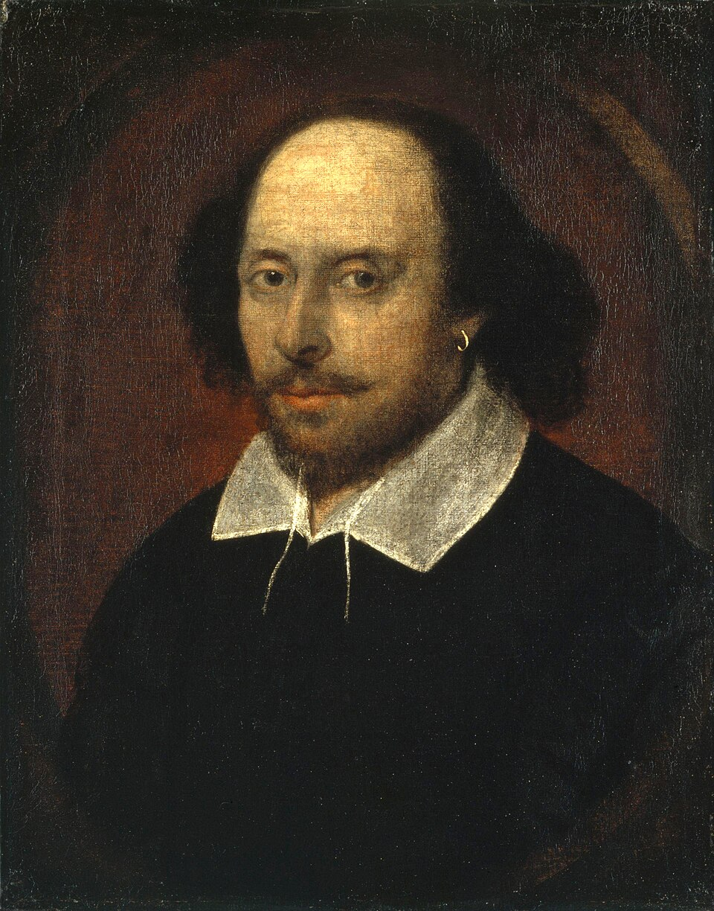
William Shakespeare
1564–1616 · Q692
ReFinED links it to
William ShakespeareQ692
✓ Correct · above 0.9
1 I read, before my eyelids dropt their shade,The Legend of Good Women, long agoSung by the morning star of song, who madeHis music heard below.
George Saintsbury, A History of English Prosody, vol. III (1910), quoting Tennyson, “A Dream of Fair Women”
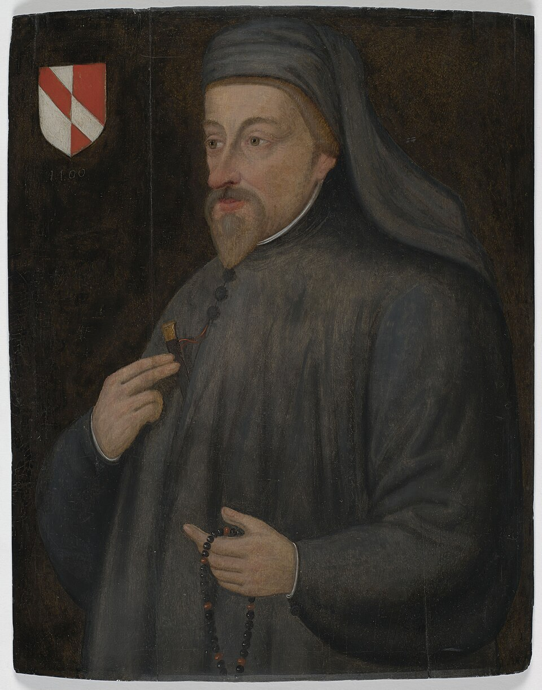
Geoffrey Chaucer
c. 1343–1400 · Q5683
ReFinED links it to
nothing
Silent
… in the feet of the Laureate’s hexameters, the Writer of these remarks is per- suaded that the quantity of the English has not been sufficiently insisted upon, …
Samuel Tillbrook, Remarks upon the Modern Hexametrists (1822)
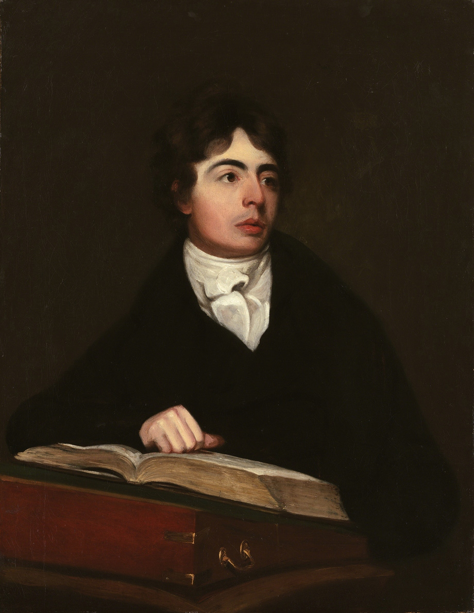
Robert Southey
Poet Laureate 1813–1843 · Q216838
ReFinED links it to
nothing
Silent
In the Laureate’s hexa- meters syllables are made long by position when we pronounce them short, as “ fallen from heaven,” …
W. R. Inge, in Classical Metres in English Poetry (1922)
Robert Bridges
Poet Laureate 1913–1930 · Q925991
ReFinED links it to
nothing
Silent
… Here fynyssheth the boke of Eneydos, compyled by Vyrgyle, whiche hathe be translated oute of latyne in to frenshe, and oute of frenshe reduced in to Englysshe by me Wyllm Caxton, 1490.
Caxton’s colophon (1490), quoted in W. J. Harris, The First Printed Translations into English of the Great Foreign Classics (1909)
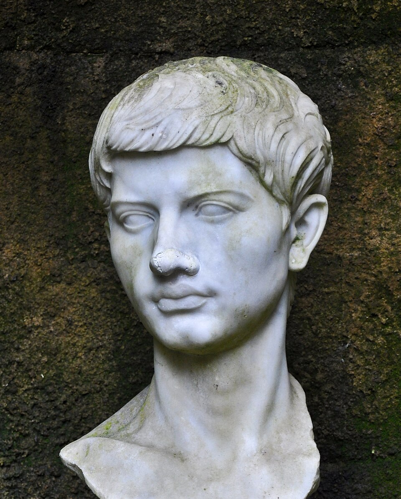
Virgil
70–19 BCE · Q1398
ReFinED links it to
VirgilQ1398
✓ Correct · above 0.9
… Aristotle reporteth none to haue greatly flourished in Gréece … before the time of Homer. And Tully sayth as much, that there were none wrytt woorth the reading twyce in the Romaine tongue, before ye Poet Ennius.
William Webbe, A Discourse of English Poetrie (1586)
Cicero
Marcus Tullius Cicero, 106–43 BCE · Q1541
ReFinED links it to
CiceroQ1541
✓ Correct · below 0.9
… A second will soon appear. “H. D.”, one of the Imagistes, is also a young American poet resident abroad.
Poetry: A Magazine of Verse (1914)
H.D.
Hilda Doolittle, 1886–1961 · Q236469
ReFinED links it to
H.D.Q236469
✓ Correct · above 0.9
… lend thy books; but let it be to such a one as S. T. C.; he will return them (generally anticipating the 5 time appointed) with usury; …
Charles Lamb, “The Two Races of Men” (1820), in F. B. Young, A College Course in Writing from Models (1910)
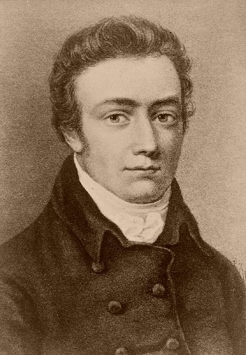
Samuel Taylor Coleridge
1772–1834 · Q82409
ReFinED links it to
nothing
Silent
… What right had Josiah Walker to repress any remarks made, in the confidence of friendship, by Bobert Bums? …
John Wilson, Essays Critical and Imaginative (1856)
Robert Burns
1759–1796 · Q81960
The OCR handed it Bobert Bums, linked to
nothing
Silent
CUISH, kwis. f. (340). The armour that covers the thighs. I have followed Dr. Johnfon’s fpelling in this word, though I think it not fo cor- rect as cuiffe, the original French, and which he has himself followed …
John Walker, A Critical Pronouncing Dictionary (1791)
Samuel Johnson
1709–1784 · Q183266
The OCR handed it Johnfon, linked to
nothing
Silent
… I refer to the final chorus: Miss Barrett (Mrs. Browning she is now, by the way) is apt to versify very loosely and wildly; yet we occasionally find in her lines, stanzas, and even whole poems, of rare melody.
Carl Benson, “Short Chapters on Novel and Exotic Metres” (1847)
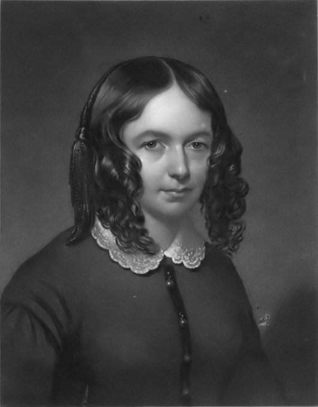
Elizabeth Barrett Browning
1806–1861 · Q228494
ReFinED links it to
Elizabeth Barrett BrowningQ228494
✓ Correct · below 0.9
… in the whole range of romantic literature. Another romance of the same class, and constructed, too, on the model of St. Leon, but of more intense interest, is the story of Frankenstein, by Mrs. Shelley, the daughter of Godwin.
James Baldwin, English Language and Literary Criticism (1882)
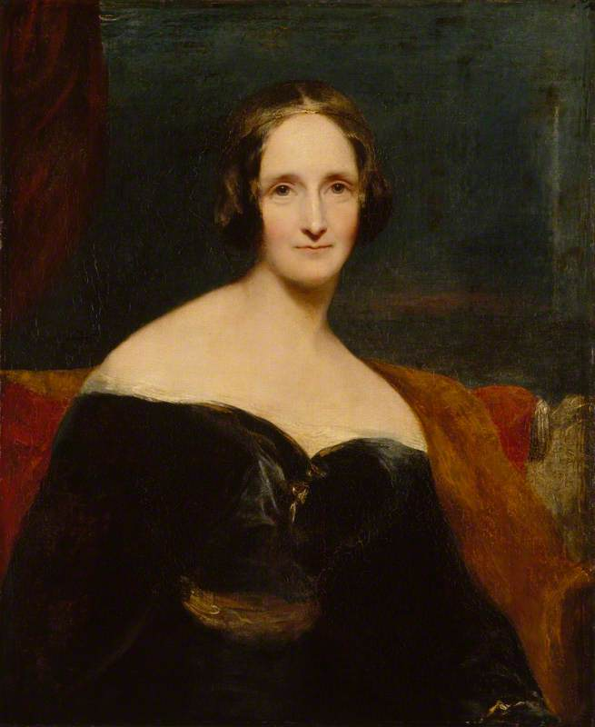
Mary Shelley
1797–1851 · née Godwin · Q47152
ReFinED links it to
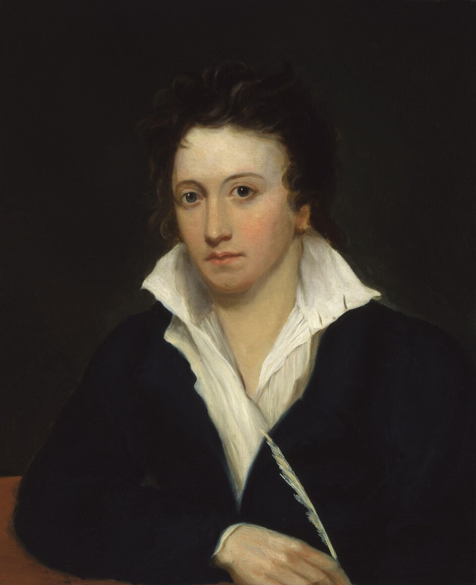
Percy Bysshe ShelleyQ93343
✗ Wrong · above 0.9
… The mighty undulations of thy song, O sightless bard, England’s Mæonides ! And ever and anon, high over all Uplifted, a ninth wave superb and strong, Floods all the soul with its melodious seas.
Henry W. Longfellow, sonnet, quoted in R. M. Kavana, Composition and Rhetoric Based on Literary Models (1903)
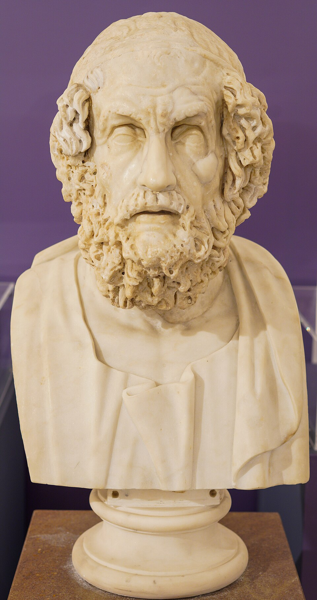
Q6691Q79759ReFinED links it to
HomerQ6691
? Above 0.9 · for Homer
The professed imitators of Scott have been numerous, but not successful. […] multiplying instead of retrenching those similes which, even in the original, were so obtrusively frequent, as to remind us of Bayes’ rule for writing dialogue, “ever make a simile when you are sur- prised;” …
Treatises on Poetry, Modern Romance, and Rhetoric (1839)
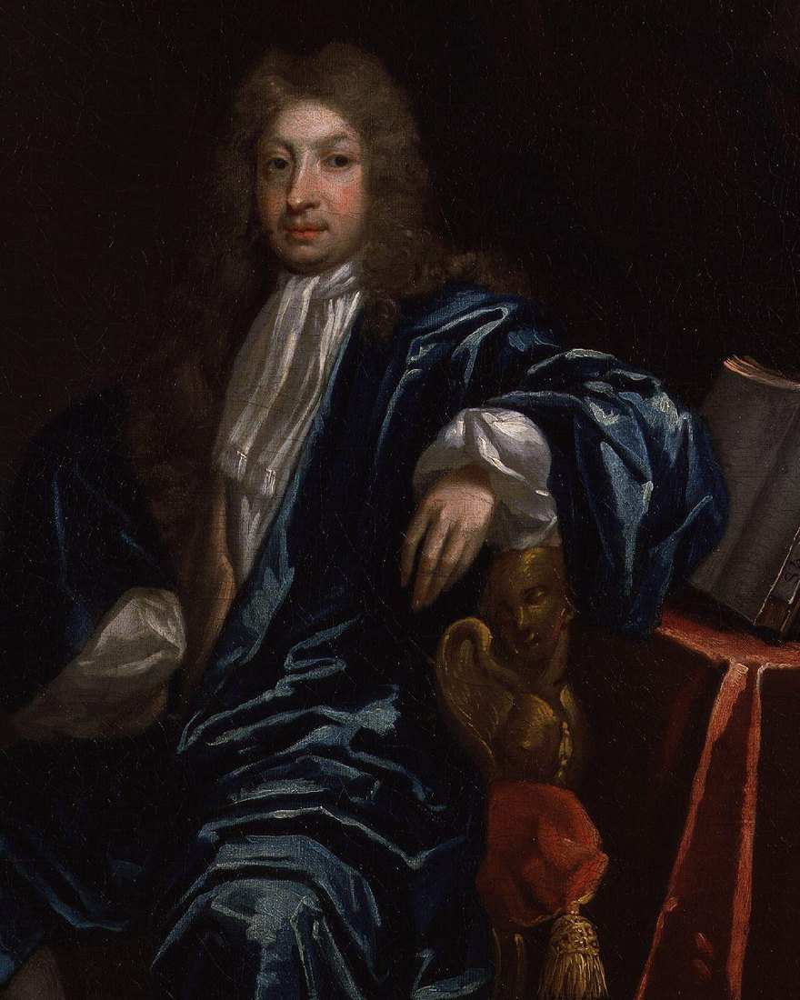
John Dryden
1631–1700 · “Mr. Bayes” in The Rehearsal (1671) · Q213355
ReFinED links it to
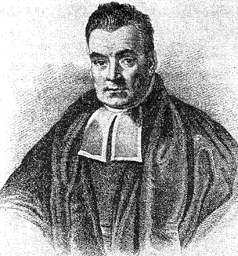
Thomas BayesQ208452
✗ Wrong · below 0.9
… and once in the margin, that is, except the fignatures, whereever his name occurs, it is written SHACKSPEARE; and the inſtrument itsſelf is, by two different indorfements, called MR. SHACKSPERES will, …
Joseph Ritson, Remarks, Critical and Illustrative, on the Text and Notes of the Last Edition of Shakspeare (1783)
William Shakespeare
1564–1616 · Q692
ReFinED links it to
William ShakespeareQ692
✓ Correct · above 0.9
… the omission of the New Year’s Ode on this day ‘occasioned much speculation’. ‘Peter Pindar’ seized the opportunity to write an Ode on no Ode, beginning— What! not a sprig of annual metre, …
E. K. Broadus, The Laureateship (1921)
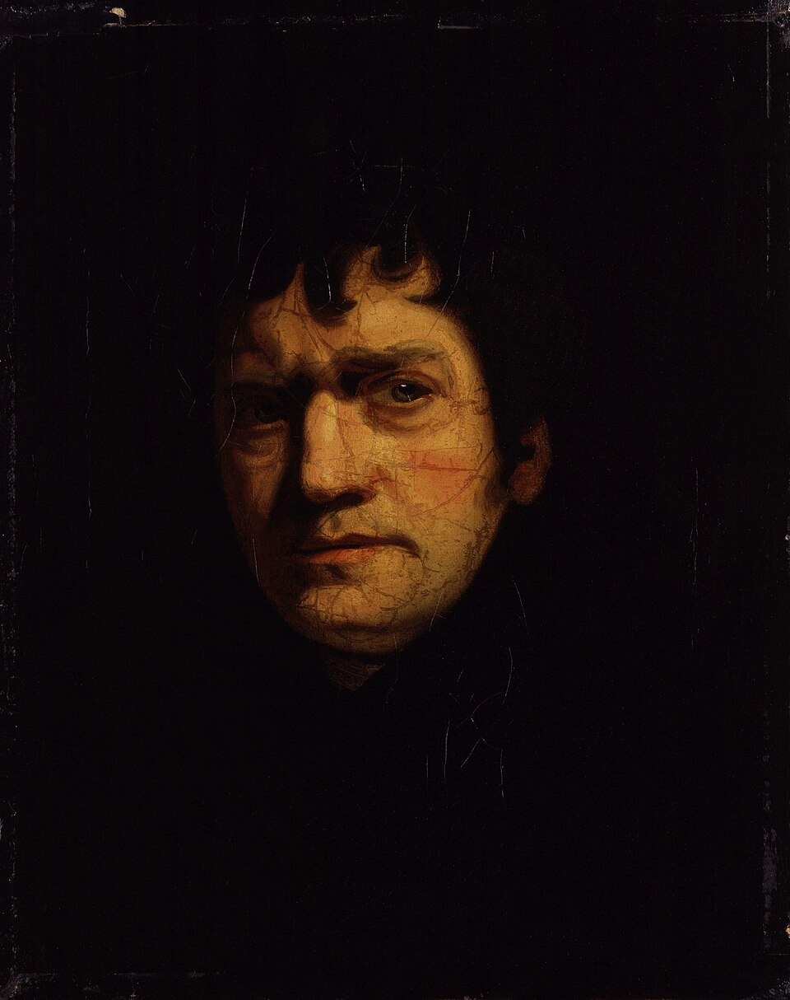
John Wolcot
1738–1819 · satirist · Q707652
ReFinED links it to
John WolcotQ707652
✓ Correct · above 0.9
… while they are in Switzerland with Byron Shelley visits Mont Blanc, and Mary Godwin partly composes her novel “Frankenstein; ” returning to England in the autumn of 1816, Shelley settles temporarily at Bath; …
J. Scott Clark, A Study of English and American Poets (1900)
Mary Shelley
1797–1851 · née Godwin · Q47152
ReFinED links it to
Mary ShelleyQ47152
✓ Correct · above 0.9
… Evidently this is not the real Burns, or his name and fame would have disappeared long ago. Nor is Clarinda’s love poet, Sylvander, the real Burns either. But he tells us himself: « These English songs gravel me to death.
Matthew Arnold, “The Study of Poetry” (1880), in The World’s Best Essays (1900)
Robert Burns
1759–1796 · Q81960
ReFinED links it to
Robert BurnsQ81960
✓ Correct · above 0.9
… This was three years after the firſt publication of Paradiſe Loſt. The words follow, « Iohannes Miltonus, præter alia quæ fcripfit elegantiffima tum Anglicè tum Latinè, nuper pub- Hei juris fecit Paradifum amiflum, Poema, …
Edward Phillips (1670), quoted in Joseph Warton, An Essay on the Genius and Writings of Pope (1782)
John Milton
1608–1674 · Q79759
The OCR handed it Iohannes Miltonus, linked to
nothing
Silent
… they were called Vates, which worde signifyeth as moche as prophetes. And therefore Tulli in his Tusculane questyons supposeth that a poete can nat abundantly expresse verses sufficient and com- plete, …
Sir Thomas Elyot (1531), quoted in G. Gregory Smith, Elizabethan Critical Essays (1904)
Cicero
106–43 BCE · Q1541
Photo: José Luiz, CC BY-SA 4.0
ReFinED links it to
Magdalena TulliQ2068682
✗ Wrong · below 0.9
… J. M. Kennedy, English Literature, Lond. (Sampson Low), $2.00. Includes Shaw, Wells, Yeats, Fiona Macleod, Binyon, Le Gallienne, Gissing. R. Le Gallienne, Rudyard Kipling; a criticism, N. Y. (Lane), $1.50.
A. S. Mackenzie, History of English Literature (1914), reading list
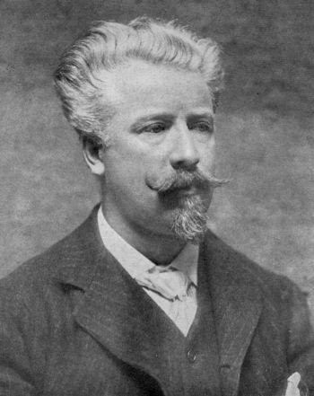
William Sharp
1855–1905 · wrote as “Fiona Macleod” · Q1575288
ReFinED links it to
William SharpQ1575288
✓ Correct · above 0.9
The 32 poets in the top 1% account for 59% of all 737,194 mentions (Gini 0.92). The five most mentioned are Shakespeare, Milton, Chaucer, Homer, and Virgil.
* After Sherwin Rosen, “The Economics of Superstars,” American Economic Review (1981).
Homer and Virgil hold the top two places until Milton passes them after 1900.
Cumulative distinct works per poet in the PPA Literary collection, top 10 by decade
3.2
The quotable canon: Poetry as example in the Princeton Prosody Archive (1532–1929)
Wouter Haverals, Meredith Martin, Rebecca Sutton Koeser & Laure Thompson.
Computational Humanities Research 2:e28 (2026).
Quoted fragmentSource corpus
The first line, “The curfew tolls the knell of parting day,” has been adopted from Dante’s Purgatorio.
a PPA host work, 1857
Text reuse
Reference poemReference corpus
Countable signal
Raw passim alignments
1,263,587Poem appearances (poem × host work)
509,030Literary & Linguistic, reprints collapsed, 1694–1920
274,206Implausible & misattributed matches removed
252,893We align the PPA against 246,724 reference poems, from Chadwyck-Healey plus the Shakespeare plays it omits.
Some reference “poems” borrow other poets’ lines, so a match can name the wrong source.
Laman Blanchard, Ode to the Human Heart (1842)
Ezra Pound, Canto LXXX (1948)
The evil that men do lives after them’ Shakespeare
well, that is from Julius Caesar
unless memory trick me
who crossed the Rubicon up near Rimini
We remove centos and adaptations by hand. A biographical filter then drops matches in works published before the poet turned eighteen, which rules out Pound (b. 1885).
| # | Work | Author | Appearances | In the PPA |
|---|---|---|---|---|
| 1 | Paradise Lost | John Milton | 1,326 | 1679–1929 |
| 2 | Hamlet | William Shakespeare | 1,287 | 1702–1929 |
| 3 | Psalms | King James Bible | 1,145 | 1644–1928 |
| 4 | Julius Caesar | William Shakespeare | 909 | 1702–1929 |
| 5 | Macbeth | William Shakespeare | 877 | 1702–1929 |
| 6 | The Merchant of Venice | William Shakespeare | 844 | 1718–1928 |
| 7 | An Essay on Criticism | Alexander Pope | 833 | 1712–1929 |
| 8 | Proverbs | King James Bible | 757 | 1644–1927 |
| 9 | Elegy Written in a Country Churchyard | Thomas Gray | 735 | 1756–1929 |
| 10 | Job | King James Bible | 698 | 1644–1927 |
| 11 | Don Juan | Lord Byron | 694 | 1810–1929 |
| 12 | Christus: A Mystery | Henry Wadsworth Longfellow | 687 | 1825–1929 |
| ⋯ 38,898 more, 42% quoted just once, Gini 0.72 ⋯ | ||||
| 38,911 | The Mohawk | John D. M’Kinnon | 1 | 1909 |
| 38,912 | Seldom “can’t” | Christina Georgina Rossetti | 1 | 1915 |
| 38,913 | Greater Memory | Arthur William Edgar O’Shaughnessy | 1 | 1916 |
| 38,914 | To a Cricket | William Cox Bennett | 1 | 1912 |
The top 1% of poems, 390 of them, hold 30% of all appearances. The top 1% of poets hold 59% of mentions. Gini 0.72 for poems, 0.92 for poets.
Poets: 737,194 name mentions (Haverals, Plecháč & Šeļa, Journal of Cultural Analytics, 2026, fig. 3). Poems: 267,237 appearances, one per poem per PPA work (our count).
Distinct poems quoted per 100 pages of prosody writing. As a rate, it climbs only if quotation itself broadened, not merely because the archive grew.
A raw count of distinct poems can’t separate a widening practice from a thickening archive. More host pages simply mean more chances to quote. So we model a rate: distinct poems per page of prosody writing in each year.
Modelled window 1694–1920, from the first year with ≥5 PPA host works to the PPA’s coverage horizon.
Which poems gained or lost ground
between 1694 and 1920?
\( p_{it} \) is a poem’s prevalence, the share of a decade’s prosody works that quote it.
\( k_{it} \sim \text{Beta-Binomial}\,(n_t,\, p_{it}) \), since the counts are overdispersed.
Hierarchical Bayesian model of 896 sustained-presence poems (≥30 host works across ≥10 decades)
Eligibility starts 18 years after the poet’s birth, so Tennyson is not scored in the 1700s. The 896 poems each appear in ≥30 host works across ≥10 decades. Fitted with Bambi / PyMC (NUTS), \( {\hat{R} \le 1.02} \).
| # | Work | Author / Translator | Slope | Host works |
|---|---|---|---|---|
| 1 | Pastoral V (transl. 1697) | Virgil / John Dryden | −.27 | 31 |
| 2 | The Art of Poetry (transl. 1680) | Horace / Earl of Roscommon | −.25 | 92 |
| 3 | Prince Arthur (1695) | Sir Richard Blackmore | −.25 | 58 |
| 4 | On Roscommon’s Translation of Horace (1680) | Edmund Waller | −.24 | 32 |
| 5 | The Art of Poetry (transl. 1757) | Horace / William Duncombe | −.24 | 42 |
| 6 | The Georgics (transl. 1753) | Virgil / Joseph Warton | −.24 | 50 |
| 7 | Medulla Poetarum Romanorum (transl. 1737) | Henry Baker | −.23 | 214 |
| 8 | Pastoral I (transl. 1697) | Virgil / John Dryden | −.23 | 45 |
| 9 | The First Satire of Persius (transl. 1693) | Persius / John Dryden | −.22 | 39 |
| 10 | An Essay on Translated Verse (1684) | Earl of Roscommon | −.22 | 125 |
| 11 | Pastoral III (transl. 1697) | Virgil / John Dryden | −.22 | 35 |
| 12 | Metamorphoses, Book XII (transl. 1700) | Ovid / John Dryden | −.22 | 31 |
| 13 | Metamorphoses, Book I (transl. 1693) | Ovid / John Dryden | −.21 | 48 |
| 14 | An Essay upon Poetry (1682) | Duke of Buckingham | −.21 | 79 |
| 15 | Virgil’s Æneid (transl. 1740) | Virgil / Christopher Pitt | −.20 | 140 |
| # | Work | Author | Slope | Host works |
|---|---|---|---|---|
| 1 | The Rime of the Ancient Mariner (1798) | Samuel Taylor Coleridge | +.35 | 287 |
| 2 | The Daffodils (1807) | William Wordsworth | +.31 | 109 |
| 3 | Ode: Intimations of Immortality (1807) | William Wordsworth | +.30 | 263 |
| 4 | Tintern Abbey (1798) | William Wordsworth | +.26 | 170 |
| 5 | The Eve of St Agnes (1820) | John Keats | +.24 | 108 |
| 6 | Prometheus Unbound (1820) | Percy Bysshe Shelley | +.23 | 128 |
| 7 | Is There for Honest Poverty (1795) | Robert Burns | +.21 | 64 |
| 8 | Christabel (1816) | Samuel Taylor Coleridge | +.21 | 157 |
| 9 | The Education of Nature (1800) | William Wordsworth | +.20 | 74 |
| 10 | On His Blindness (1673) | John Milton | +.19 | 99 |
| 11 | Peter Bell (1819) | William Wordsworth | +.19 | 63 |
| 12 | To Daffodils (1648) | Robert Herrick | +.19 | 55 |
| 13 | Sonnet 73 (1609) | William Shakespeare | +.18 | 70 |
| 14 | To a Waterfowl (1818) | William Cullen Bryant | +.18 | 71 |
| 15 | Ae Fond Kiss (1791) | Robert Burns | +.18 | 41 |
| # | Work | Author | Slope | Host works |
|---|---|---|---|---|
| 1 | Psalms (1611) | King James Bible | −.011 | 1,110 |
| 2 | Proverbs (1611) | King James Bible | +.007 | 738 |
| 3 | Job (1611) | King James Bible | −.005 | 683 |
| 4 | Othello (1623) | William Shakespeare | +.017 | 661 |
| 5 | King Lear (1623) | William Shakespeare | +.021 | 579 |
| 6 | The Faerie Queene (1596) | Edmund Spenser | +.023 | 560 |
| 7 | Henry VIII (1623) | William Shakespeare | +.026 | 544 |
| 8 | Night Thoughts (1742–46) | Edward Young | −.003 | 526 |
| 9 | Henry IV, Part 1 (1598) | William Shakespeare | +.027 | 499 |
| 10 | Essay on Man, Epistle IV (1734) | Alexander Pope | −.018 | 490 |
| 11 | King John (1623) | William Shakespeare | +.026 | 467 |
| 12 | Essay on Man, Epistle I (1733) | Alexander Pope | −.019 | 462 |
| 13 | Henry IV, Part 2 (1600) | William Shakespeare | +.009 | 459 |
| 14 | Henry V (1623) | William Shakespeare | +.007 | 450 |
| 15 | Measure for Measure (1623) | William Shakespeare | +.020 | 379 |
We group the same per‑poem slopes by Chadwyck‑Healey’s period labels.
Slopes in log‑odds per decade, relative to the shared trend. Middle English, led by Chaucer, sits furthest right.
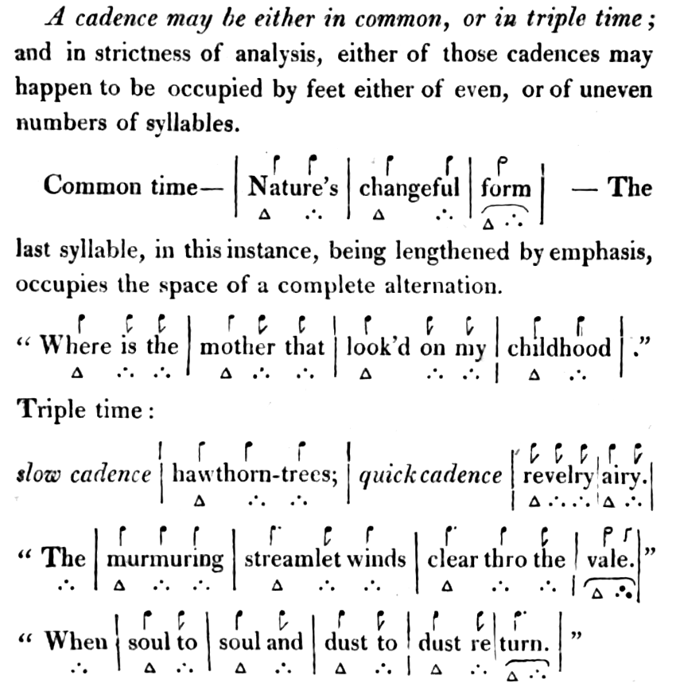
“The materials in the PPA are difficult, irregular, and so historically specific that they prevent any method from disappearing behind its result.”
Martin & Haverals, “Begin Again” (2026)
4
Princeton, 14–17 May 2025
The database
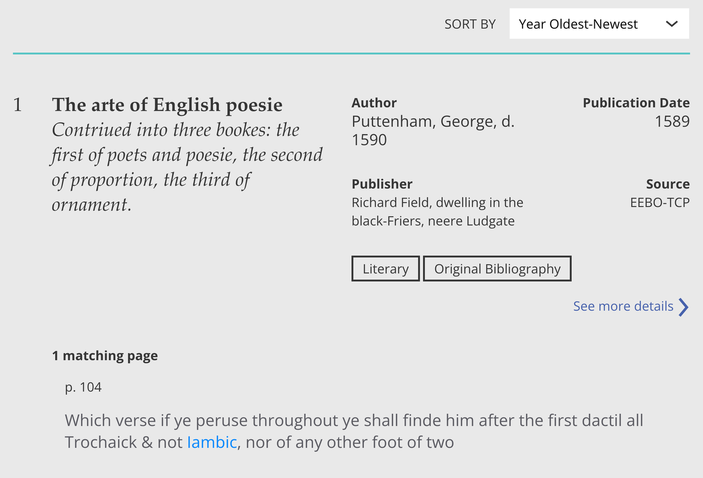
The dataset
cf. Ben Recht, “Microconferences,” arg min, 2026
computational scholars scholars of prosody & poetics
Wed 14 May
intro to the PPA
student presentation
PPA data play
Thu 15 May
PPA data play
intro to the PPA
2 panels“Conflicting Systems” and “Examples, Experiments, Experience”10 scholars
Fri 16 May
the data, from the CDH team
10 data presentations20 scholars
Sat 17 May
keynoteYopie Prins
graduate caucus13 students
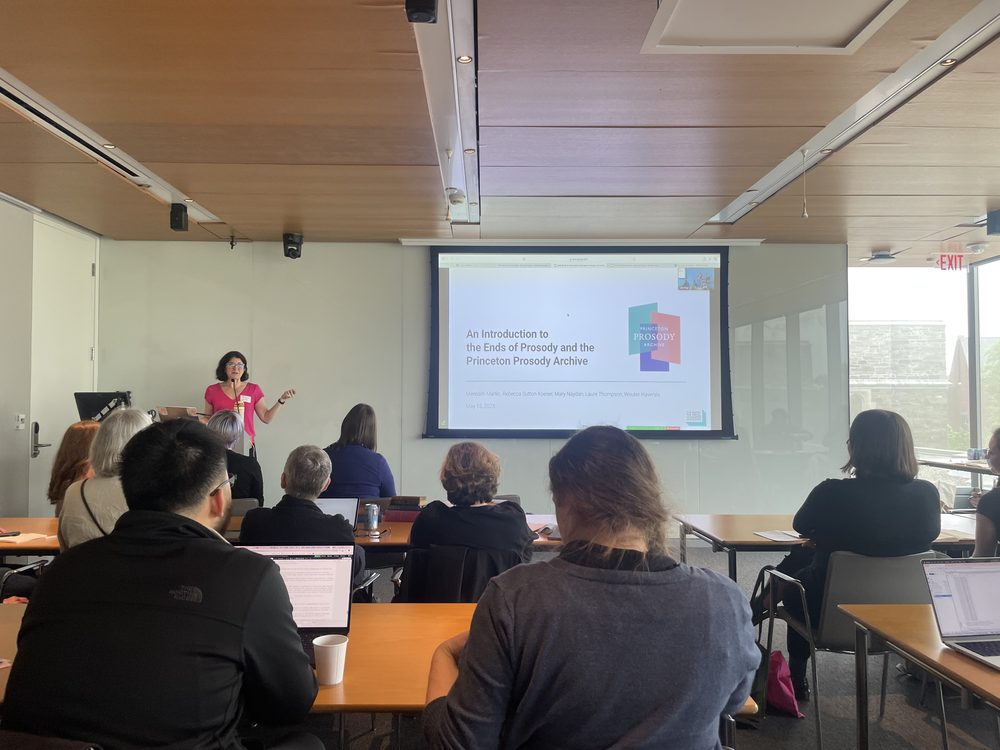
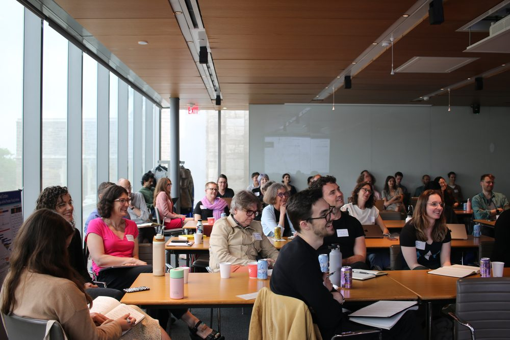
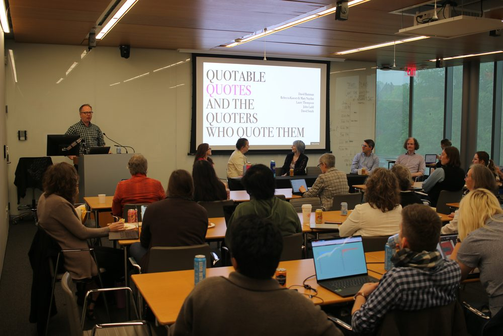
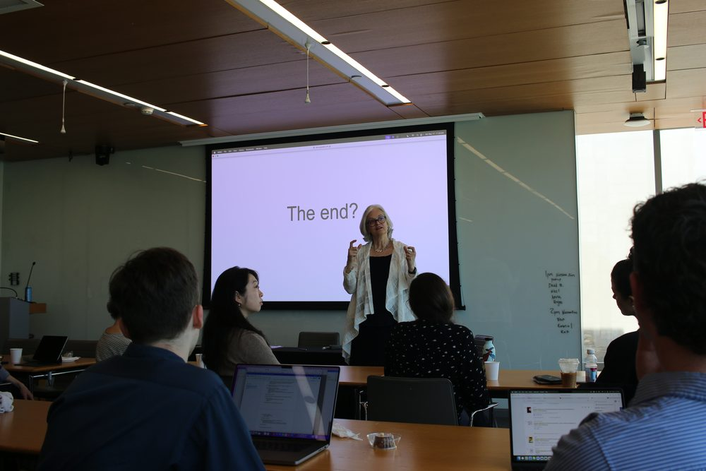
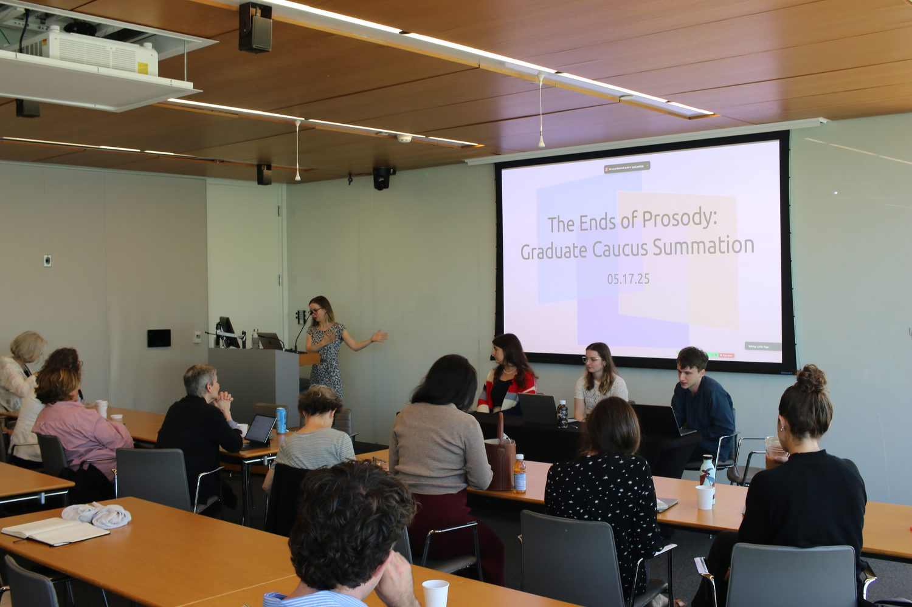
Photos by Carrie Ruddick and Wouter Haverals
scholars of prosody & poetics
through the database
computational scholars
through the dataset
Princeton, May 2025
The Ends of Prosody
English
Comparative Literature
Information Sciences
Computer Science
Victorian Poetry 63(3)
Journal of Cultural Analytics 11(4)
Three PPA datasets are now openly available!
“The materials in the PPA are difficult, irregular, and so historically specific that they prevent any method from disappearing behind its result.”
Martin & Haverals, “Begin Again” (2026)